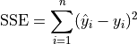
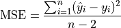

Linear Regression#
Linear Regression is a technique for leveraging the linear correlation that exists between two variables; It uses the information available in one variable to help predict the value of the other variable. The variable used to predict is called the predictor variable and is typically denoted  . The variable whose value is being predicted is called the response variable and is typically denoted
. The variable whose value is being predicted is called the response variable and is typically denoted  .
.
The objective to Linear Regression is to fit a model  that describes the dependence the variable has on the . The model will be used to make predictions for given values of . The predicted value of given will be denoted
that describes the dependence the variable has on the . The model will be used to make predictions for given values of . The predicted value of given will be denoted  .
.
Note
is a linear function. is a point on the curve on . (If one were committed to the purity of symbols, would represent the y-value of a point; but implicit in the subscript notation is its mapping to a corresponding value.)
In order to find a good model, the concept of model error will be concentrated in the definition of a residual,

This quantity will provide a metric for validating models against observed data.
TODO
Regression Model#
TODO
The Linear Regression Model is specified by two equations. The first equation parameterizes the predicted value of given , . The second equation describes the distribution of error terms as the difference of actual values and predicted values.
The term  is a normally distributed error term centered around 0 with a variance equal to the mean squared error of the model,
is a normally distributed error term centered around 0 with a variance equal to the mean squared error of the model,

TODO
Mean Squared Error#
The term is not the observed value of  in the bivariate sample of data that was used to calibrate the model. It is the predicted value of given the observed value of
in the bivariate sample of data that was used to calibrate the model. It is the predicted value of given the observed value of  . This is an extremely important point when talking about regression. The model equation is a prediction, and the prediction is not exact. Each predicted value of , , will deviate from the observed value of . The deviation, if the model is a good fit, should be normally distributed around 0.
. This is an extremely important point when talking about regression. The model equation is a prediction, and the prediction is not exact. Each predicted value of , , will deviate from the observed value of . The deviation, if the model is a good fit, should be normally distributed around 0.
TODO
Sum Squared Error#
TODO

TODO
MSE: Mean Squared Error#
TODO

TODO
TODO: degrees of freedom, two parameters in regression model, etc
Model Estimation#
Model-fitting in the context of Linear Regression can be understood as the task of finding the values of the model coefficients,  and
and  , most appropriate to use in the Regression Equation, .
, most appropriate to use in the Regression Equation, .
Least Squares Estimation#
One of the most common and easily understood methods for estimating the value of the model coefficients is known as Least Squares Estimation. The reason for the name Least Squares will shortly be explained. In short, with this method, the Regression Model is estimated by finding the values of and that minimize the MSE of the model.
The formulae that result from the application of this process are given directly in the following cards for reference. The logic and derivation of these formulae are the the topics of discussion in the next section.
TODO
TODO
Assessing Model Fit#
Regression is a not a one-stop shop; it is important to bear in mind the limitations of Regression. If the model assumptions are not met Residual Analysis —————–
TODO: distribution of residuals, normality assumption
Error Reduction#
TODO
TODO
TODO
TODO
Coefficient of Determination#
TODO
TODO